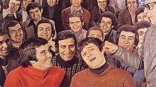
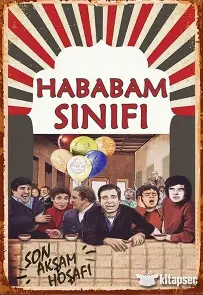

Özel Çamlıca Lisesi’nde eğitim gören haylaz ve neşeli öğrencilerden oluşan Hababam Sınıfı, derslerden kaçar, öğretmenlerle dalga geçer ve okul kurallarını hiçe sayar. Ancak okula yeni gelen disiplinli ve idealist Mahmut Hoca (nam-ı diğer Kel Mahmut), sınıfı düzene sokmak için mücadele eder. Öğrencilerle arasında zamanla sevgiye dayalı bir bağ kurulur. Film, mizahın yanında dostluk, eğitim ve hayat dersleriyle doludur.

